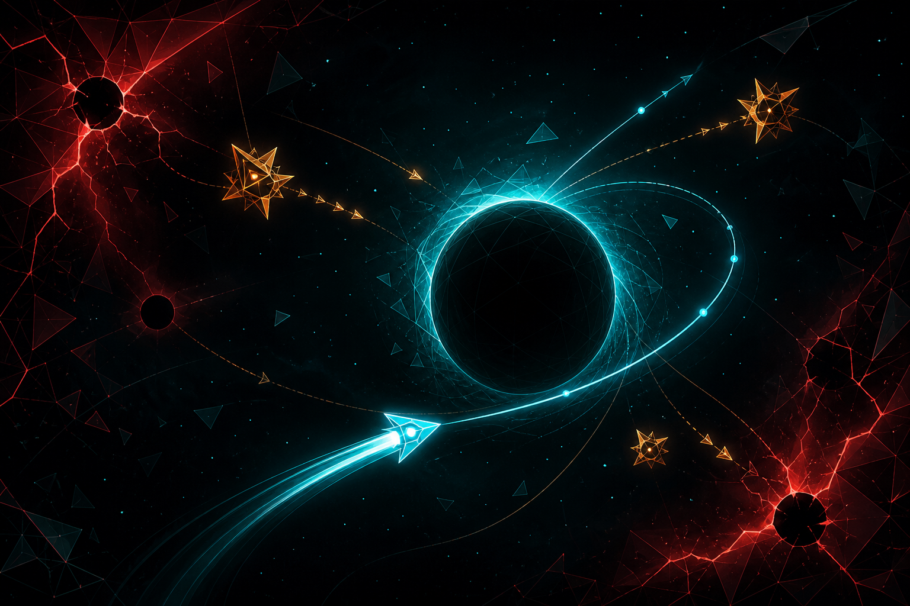

Physics survival // gravity is the map
VECTOR ANOMALY
A physics-driven arena survival roguelike where movement is the primary survival skill. Read gravity, preserve momentum, and turn near-death trajectories into recovery routes.
Readgravity pressure
Banktangent speed
Exitalive by inches
Public surface
Discord + Windows
Authored climb
40 waves
Final bridge
75 sec
Polish pass
v1.0.4.7
First three seconds
The save should look impossible, then fair.
Vector Anomaly starts with familiar arena pressure, then makes the escape route physical. The player reads a gravity source, threads a threat line, and uses the pull instead of fighting it.
- Visible player, gravity source, threat, and recovery path.
- Trajectory prediction stays bright because it is player-facing, not debug noise.
- Late-game chaos escalates through red warnings and broken geometry, not unreadable fog.
player visible
0.22 sec recovery
Trajectory proof
Readable trajectory is the selling image.
A capture-ready view of the slingshot loop: entry vector, gravity exposure, tangent exit, and death diagnosis. The real interaction belongs in the game; the site sells the readable shape of mastery.
Velocity: high
Periapsis: sweet band
Slingshot grade: apex
Tangent exit verified
entry vector
gravity exposure
recoverable tangent
Run systems
The run structure stays legible while physics becomes strange.
Players recognize waves, builds, boss anchors, and quick retry. The difference is that every choice bends motion, time, gravity, or field rules instead of adding flat damage numbers.
Movement Is Survival
Precision drag, momentum mode, tangent exits, dash recovery, and gravity-window energy returns make routing the main skill while weapons support field control.
Fields Rewrite Space
Compression, inversion, slipstream, temporal scars, harmonic orbit, and seeded arena laws change how the player reads pressure before damage numbers matter.
Watchable Scores
RunScoreTracker turns kinetic kills, vector shears, event-horizon escapes, and apex slingshots into challenge codes.
Readability Pass
Controller auto-detect, deadzone tuning, right-stick aim, heat-map caps, readability halos, and safer high-scale HUD layout support clean playtest capture.
Campaign Freeholds
Defend the home planet, dock with trader motherships, buy escorts, and decide when hostile carriers become worth hunting.
Visible Modded Runs
Safe manifest packs surface in the HUD, trigger bounded effects, and keep co-op signatures honest when the run is no longer vanilla.
Standard run stack
Calm, tension, overload, recovery.
- Waves 1-4Baseline movement and readable pressure
- Waves 5-25Boss laws, resonance, time pockets, rare events
- Waves 30-40The Polymorph, Centrifuge Marshal, The Extradimensional Breacher
- RuptureWave generator offline, music finale begins
Boss laws
Bosses are physics rules with bodies.
Each anchor is designed to be readable in the same way a genre player expects, then memorable because the arena itself changes under the fight.
Gravity Warden
Turns field overlap into traps and escape lanes.
The Accretion Core
Collapses objects inward until routing becomes pressure math.
Null Vector Seraph
Interrupts clean movement through exact disruption corridors.
Magnetar Twins
Forces mirrored polarity decisions across paired anchors.
Tidal Rift Weaver
Moves the safe path while the player is already committed.
The Polymorph
Changes its equation until pattern recognition becomes survival.
Centrifuge Marshal
Turns late-game motion into a shear-lane mastery check.
The Extradimensional Breacher
Leaves the viewport, tears back through the boundary, and starts Rupture.
PHYSICS MUTATION DETECTED:
GRAVITY WARDEN - resonance field control
Production systems
Impossible physics on screen, bounded systems underneath.
Under the spectacle, the build keeps discovery cached, VFX pooled, safe mod manifests bounded, LAN co-op routed through one session layer, and accessibility controls close to the action.
RuntimeRegistry
cached gravity, projectile, enemy, boss, player queries
ModContentRegistry
safe manifests, visible modded run label, law weaves, recipes, challenge cards
NetworkSession
NET7 LAN host/join, shared seed, readiness, quality, co-op payoff
Settings
UI scale, controller deadzone, reduced flash, readability halos, damage feedback
Clip Lab
hook, mastery, resonance, boss law, Rupture, finale presets
Platform Matrix
Windows public, Linux/macOS/Steam Deck validation next, consoles require SDKs
Creator signal // schema 4
Build new laws without breaking the simulation.
Creator Lab forges and validates configurable packs with dependency bounds, conflict diagnostics, deterministic load order, live mod options, and co-op-safe signatures.
Launch Creator LabPACK GRAPHdependencies // ordering // conflicts
LIVE OPTIONStyped // persisted // hookable
SAFE RUNTIMEhooks // conditions // bounded effects
SHIP PROOFschema // diagnostics // report export
Community loop
Seed codes make impossible moments repeatable.
Every shareable moment should answer the same questions: where was the player, what force acted, what danger mattered, and how did recovery happen?
Future store-page capture targets include clean early movement, apex slingshotting, resonance fields, boss-law mutation, gravity heat-map proof, late-game reduced flash, LAN co-op, and Steam Deck validation footage.
COPY BUFFER: EMPTY
RUPTURE STATE
LAWS CRACKING: WAVE GENERATOR OFFLINE
controlled instability // player still visiblePlaytest path
Join the collapse signal.
Join the Discord, download the current Windows playtest, open the wiki for the mechanics map, or build safe law packs in Creator Lab.